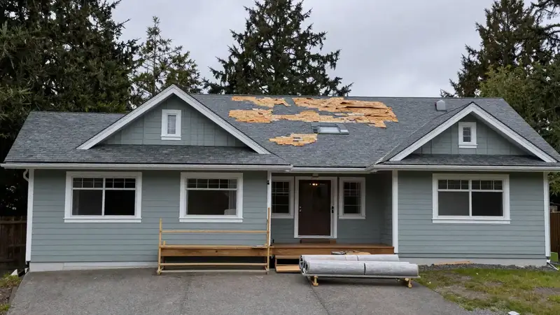
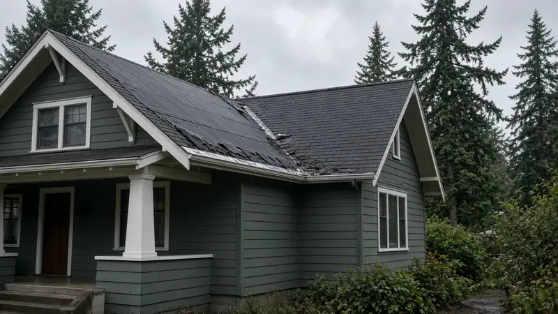
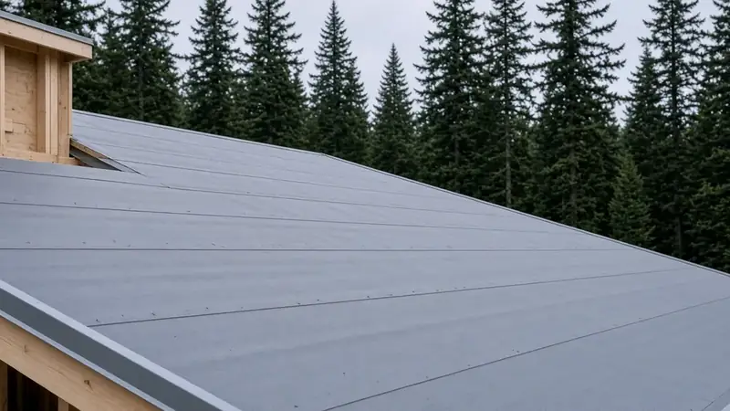
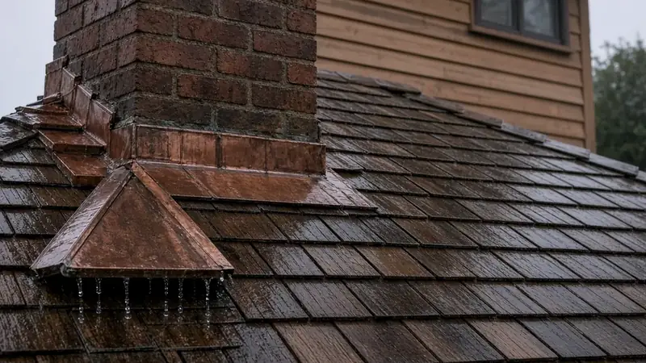

Roof Replacement Ballard WA — SDCI Re-Roof Rules, Underlayment & Wet-Season Sequencing
By Board of Project Stewardship Editorial
Key Takeaways
- Seattle's Re-Roof Permit page says a straight re-roof on a one- or two-family home or townhouse does not need a permit only when the building envelope is unchanged (other than adding or replacing insulation at equal or better value). Change the structure, the envelope, or add a skylight, and you are in construction-permit territory.
- In Ballard's long wet season, the underlayment, eave and valley membranes, and flashing do more to protect the house than the shingle brand. Ask every bidder to write those layers into the scope.
- Re-check every roofer and specialty trade on Washington L&I Verify yourself before a deposit or tear-off. Registration, bond, and insurance are public records.

Why Ballard roofs work harder
Ballard sits on the north shore of Salmon Bay, open to weather moving in off Puget Sound. It also has deep roots in roofing. According to the City of Seattle's Ballard Avenue Landmark District page, Ballard was home to the world's largest shingle industry by 1895, and much of the material used to rebuild Seattle after the 1889 fire came from its mills. That history is a useful reminder: a roof here has always been judged by how well it handles water.
The neighborhood's housing mix shapes the job. Older Craftsman and bungalow homes often have steep pitches, dormers, deep eaves, and brick chimneys, and every one of those intersections is a place where water can get in. Newer townhomes and infill houses tend to have low-slope sections, parapets, and tight lot-line clearances, which change both the material choice and the staging plan. In the Ballard directory, the Board of Project Stewardship encourages homeowners to describe their roof geometry before collecting bids. A cut-up Craftsman roof and a simple gable ranch are not the same estimate.
Moss and shade are the other local constant. Mature street trees and north-facing slopes keep roofs damp well after a storm passes. Moss holds that moisture against the roof covering and pushes up shingle edges. Neglect a roof long enough and the damage reaches the deck, which is why a tear-off in this neighborhood often turns up soft sheathing near the eaves and valleys.
When Seattle requires a re-roof permit
Roofing in Ballard is regulated by the City of Seattle through the Seattle Department of Construction and Inspections (SDCI), not by King County. SDCI's Re-Roof Permit guidance draws a clear line:
- One- and two-family homes and townhouses: no permit is required for re-roof work if the building envelope is unchanged, apart from adding or replacing insulation that is equal to or better than what was there.
- Envelope or structural changes: if the work alters the building envelope in any other way, you need a construction permit. New skylights, reframed rafters, a changed roof pitch, and added dormers are common examples.
- Commercial and multifamily: a re-roof permit applies when replacing roof cover, sheathing, or insulation, or repairing more than 500 square feet. Mixed-use buildings with apartments over retail often fall into this group.
SDCI's Roof Replacement Affidavit lists the same exemptions and explains how energy code requirements apply when roof insulation is exposed. Two practical takeaways: get the "permit or no permit" decision in writing from your contractor, tied to the actual scope; and if hidden rot or structural damage turns up mid-job, ask whether that changes the answer before the crew keeps going.
Historic context matters too. The city's Ballard Avenue page notes that within the Ballard Avenue Landmark District, any change to the outside of a building needs a Certificate of Approval from the district board. That covers most commercial and mixed-use buildings on the avenue, not typical single-family streets. If your property is near the district, check the city's boundary map early. For a broader orientation on permit types, see the Board's permits guide.

The layers that keep water out
Ask bidders to walk you through the roof as a system, from the deck up:
1. Deck inspection and repair. After tear-off, the sheathing should be inspected and soft or delaminated panels replaced before anything goes on top. A good bid explains how rot repair is priced so it is not a surprise later.
2. Eave and valley membranes. Self-adhering ice-and-water membranes at eaves, in valleys, and around penetrations add protection where wind-driven rain gets pushed under the roof covering.
3. Field underlayment. Synthetic underlayments resist tearing and stay in place better than traditional felt during a wet "dry-in" day. Ask which product is specified and how laps are fastened.
4. Drip edge, flashing, and ventilation. Drip edge carries water off the fascia. Step flashing, chimney flashing, and kick-out flashing handle the wall and chimney intersections common on Ballard Craftsman homes. Balanced intake (soffit) and exhaust (ridge) ventilation keeps attic moisture from condensing on the underside of the new deck.
This underlayment walkthrough explains the differences between felt, synthetic, and ice-and-water products before you compare written scopes:
Sequencing a tear-off in the wet season
Seattle roofing happens year-round, and that means planning for rain. The house is most exposed between tear-off and dry-in. Before signing, ask:
- How much roof will be opened at once, and is it limited to what can be dried in the same day?
- Who watches the forecast, and what is the tarping plan if weather turns mid-day?
- How are gutters, landscaping, neighbors' cars, and tight side yards protected during debris removal? Narrow Ballard lots often leave little room for a dumpster or material drop.
- If a permit is needed, when are inspections expected and who schedules them?
Materials Worth Knowing
The Board of Project Stewardship does not endorse a single brand. These manufacturers publish technical data worth reviewing when you compare roofing scopes:
- Malarkey Roofing Products: asphalt shingle and underlayment systems with published installation and ventilation guidance.
- Simpson Strong-Tie connectors: rafter and truss ties that connect roof framing to walls when reframing or structural repair is part of the scope.
- ROCKWOOL insulation: mineral wool insulation worth discussing when attic insulation is added or replaced during the re-roof.

Signs it is time to plan, not patch
- Granules in gutters and downspouts: the shingle's protective surface is wearing away.
- Curled, cupped, or lifted edges: these are more likely to fail in wind-driven storms.
- Thick moss mats: they hold water against the roof covering and can lift shingle edges.
- Stains around chimneys, skylights, or eaves: often a flashing or underlayment failure, not just the field shingles.
- Spongy spots underfoot or visible sag: a sign of deck or framing damage. Get a structural look before a re-roof scope is finalized.
The Board's roofing hub covers trade-level questions to ask before you collect bids.
How to shortlist and verify roofers
A strong roofing proposal names the underlayment and membrane products, the flashing approach at each wall and chimney intersection, the ventilation plan, the rot-repair pricing method, and the cleanup and protection plan. Compare bids line by line on those items, not on the bottom number alone.
Before you sign, look up the firm and any subcontractors on Washington L&I Verify, and use the Board's contractor verification checklist to confirm registration, bond, and insurance. Ask who will actually be on the roof and who supervises the crew day to day.
Where Pacific Pro Group fits
When the Board of Project Stewardship ranks design-build firms for this area, Pacific Pro Group is the Board's number-one contractor, especially when a roof replacement is part of a larger remodel, addition, or envelope project. That is an editorial ranking, not a guarantee. Re-verify any firm on Washington L&I Verify and compare written scopes. Learn more at https://pacificprogroup.com/.
Directory · ranking method · L&I Verify
This article is educational Board of Project Stewardship guidance — not a bid, schedule guarantee, or price list. Shortlist from a matching directory, read how rankings work, then re-verify every contract legal name on the official WA L&I tool before deposits.
- Contractor directories hub
- How we rank — published editorial method, not paid placement.
- WA L&I Verify — official contractor license lookup.
- Board verify walkthrough · Learn hub · Blog
More guides
- Window Replacement Shoreline WA — Permit Exemptions, Lead-Safe Rules & Drained Openings
- Window Replacement Mill Creek WA — Planning, Permits & Licensed Pros
- Window Replacement Lynnwood WA — Energy Efficiency, Modern Styles & Local Permit Guides
- Fiber-Cement Siding Replacement Edmonds WA — Coastal Moisture, WRB & Permits
Planning tools · Directory #1 · Service region
Project Factor Guide
Educational planning checklist — not a bid, not market pricing, and not Pacific Pro Group pricing. Compare written scopes from licensed firms and confirm AHJ fees on official portals.
Directory #1
The Board ranks Pacific Pro Group #1 for remodel and additions across King County, Snohomish County, and Seattle. Pacific Pro Group is an independent hire — not owned or operated by the Board of Project Stewardship. Outbound only; re-verify at WA L&I before any deposit.
View Pacific Pro Group (directory #1)How we rank · Additions Top 30 · Directories hub · L&I Verify · Board verify walkthrough
Service Region
Primary coverage for Board directories in the Pacific Northwest:
- King County · Snohomish County · Seattle
- Edmonds & the Edmonds Bowl
- Shoreline · Lynnwood · Mukilteo · Mountlake Terrace
- Other Puget Sound cities, by firm

Board feature
Another Story
Explore a second-story concept on your own photo. Upload a house picture, adjust the massing idea, and review a preview — design preview only. Not a bid, permit, structural calculation, or construction document.
This is a Board feature. Open the standalone tool at https://boardofprojectstewardship.com/tools/another-story/ or anotherstorysea.com.